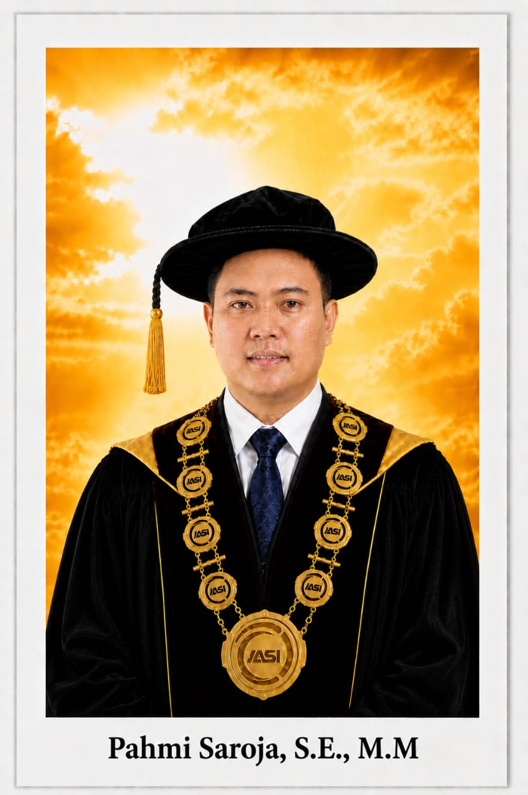

Membentuk manajer, pemimpin bisnis, dan wirausahawan global yang inovatif, kompeten, dan adaptif terhadap transformasi digital.

Assalamualaikum wr. wb.
Selamat datang di Program Studi S1 Manajemen Institut Asyifa Indonesia. Di era disrupsi bisnis dan ekonomi digital ini, kebutuhan akan talenta kepemimpinan yang adaptif, visioner, dan lincah menjadi sangat krusial. Kami di sini hadir untuk membekali Anda dengan fondasi teori manajemen yang kuat serta implementasi praktis yang fokus pada inovasi bisnis dan ekosistem kewirausahaan nyata. Dengan kurikulum yang integratif dan kemitraan industri yang luas, kami siap menemani langkah Anda tumbuh menjadi profesional atau kreator bisnis yang berdampak luas bagi perekonomian nasional maupun global.
Wassalamualaikum wr. wb.
Ketua Program Studi S1 Manajemen
"Menjadi program studi yang unggul dan inovatif dalam bidang Manajemen dengan focus pada pengembangan kewirausahaan, menghasilkan lulusan yang mampu menciptakan pengelolaan bisnis berkelanjutan dan berdaya saing global pada tahun 2035".
Berikut merupakan sebaran beban studi mata kuliah program studi S1 Manajemen (Total SKS Keseluruhan: 145 SKS, Teori: 129 SKS, Praktek: 16 SKS):
| Mata Kuliah | T | P | Jml |
|---|---|---|---|
| Pendidikan Agama Islam | 2 | 0 | 2 |
| Pendidikan Pancasila | 2 | 0 | 2 |
| Pengantar Ilmu Komputer | 1 | 2 | 3 |
| Matematika Bisnis I | 3 | 0 | 3 |
| Pengantar Teori Ekonomi | 3 | 0 | 3 |
| Pengantar Manajemen | 3 | 0 | 3 |
| Pengantar Akuntansi | 3 | 0 | 3 |
| TOTAL SKS | 17 | 2 | 19 |
| Mata Kuliah | T | P | Jml |
|---|---|---|---|
| Bahasa Inggris Bisnis | 3 | 0 | 3 |
| Pendidikan Kewarganegaraan | 2 | 0 | 2 |
| Aspek Hukum Dalam Bisnis | 3 | 0 | 3 |
| Bahasa Indonesia | 2 | 0 | 2 |
| Statistika Bisnis 1 | 3 | 0 | 3 |
| Matematika Bisnis II | 3 | 0 | 3 |
| Pengantar Bisnis | 3 | 0 | 3 |
| TOTAL SKS | 19 | 0 | 19 |
| Mata Kuliah | T | P | Jml |
|---|---|---|---|
| Etika Bisnis | 3 | 0 | 3 |
| Manajemen Sumber Daya Manusia | 3 | 0 | 3 |
| Manajemen Keuangan | 3 | 0 | 3 |
| Manajemen Pemasaran | 3 | 0 | 3 |
| Akuntansi Biaya | 3 | 0 | 3 |
| Komunikasi Bisnis | 3 | 0 | 3 |
| Manajemen Operasional | 3 | 0 | 3 |
| TOTAL SKS | 21 | 0 | 21 |
| Mata Kuliah | T | P | Jml |
|---|---|---|---|
| Manajemen Koperasi dan UKM | 3 | 0 | 3 |
| Kewirausahaan | 3 | 0 | 3 |
| Metode Kuantitatif Dalam Bisnis | 3 | 0 | 3 |
| Perpajakan | 3 | 0 | 3 |
| Manajemen Risiko | 3 | 0 | 3 |
| Perilaku Organisasi | 3 | 0 | 3 |
| Akuntansi Manajemen | 3 | 0 | 3 |
| TOTAL SKS | 21 | 0 | 21 |
| Mata Kuliah | T | P | Jml |
|---|---|---|---|
| Kepemimpinan | 3 | 0 | 3 |
| Budaya Organisasi | 3 | 0 | 3 |
| Sistem Informasi Manajemen | 3 | 0 | 3 |
| Pemasaran Digital | 3 | 0 | 3 |
| Ekonomi Manajerial | 3 | 0 | 3 |
| Manajemen Pemasaran Jasa | 3 | 0 | 3 |
| Studi Kelayakan Bisnis | 3 | 0 | 3 |
| TOTAL SKS | 21 | 0 | 21 |
Mahasiswa diwajibkan memilih salah satu dari 3 kelompok konsentrasi peminatan keahlian berikut:
| Manajemen Pemasaran Internasional | 3 |
| Komunikasi Pemasaran | 3 |
| Riset Pemasaran | 3 |
| Strategi Pemasaran | 3 |
| Perilaku Konsumen | 3 |
| Metodologi Penelitian | 3 |
| Seminar Manajemen Pemasaran | 3 |
| TOTAL SKS PEMASARAN | 21 |
| Manajemen Keuangan Internasional | 3 |
| Strategi Manajemen Keuangan | 3 |
| Manajemen Keuangan Lanjutan | 3 |
| Manajemen Perbankan | 3 |
| Lembaga Keuangan & Pasar Modal | 3 |
| Metodologi Penelitian | 3 |
| Seminar Manajemen Keuangan | 3 |
| TOTAL SKS KEUANGAN | 21 |
| Manajemen SDM Internasional | 3 |
| Manajemen SDM Strategi | 3 |
| Manajemen Pelatihan | 3 |
| Perencanaan SDM | 3 |
| Riset SDM | 3 |
| Metodologi Penelitian | 3 |
| Seminar Manajemen SDM | 3 |
| TOTAL SKS SDM | 21 |
| Mata Kuliah | T | P | Jml |
|---|---|---|---|
| Bisnis Internasional | 3 | 0 | 3 |
| Kapita Selekta Manajemen | 3 | 0 | 3 |
| Manajemen Strategik | 3 | 0 | 3 |
| Kuliah Kerja Nyata (KKN) | 0 | 4 | 4 |
| Magang Industri PKL | 0 | 4 | 4 |
| TOTAL SKS | 9 | 8 | 17 |
| Mata Kuliah | T | P | Jml |
|---|---|---|---|
| Skripsi | 0 | 6 | 6 |
| TOTAL SKS | 0 | 6 | 6 |